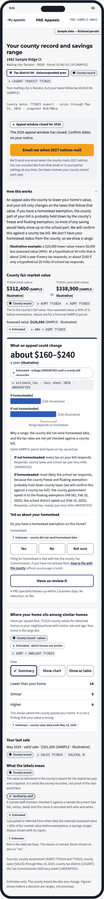
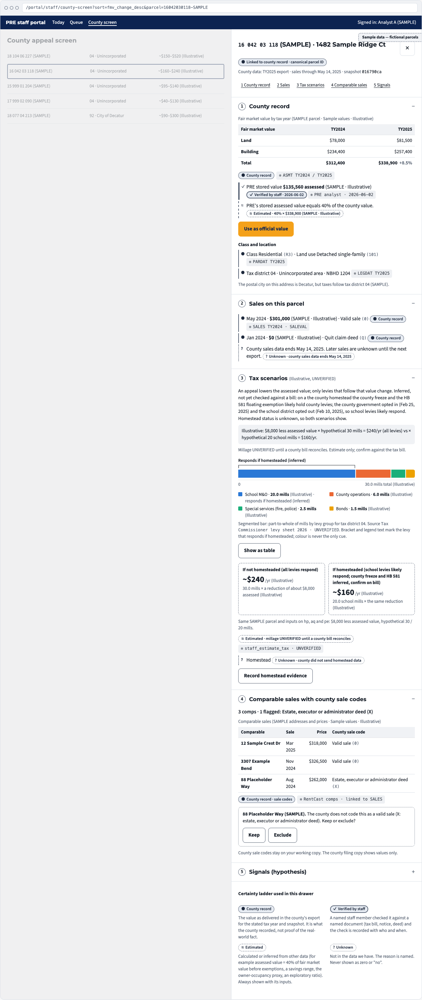

Property Intelligence UX · Design and validation planning · September 2026
Design stage · not yet builtA county export can contain a great deal of data without answering the question a person actually has. A homeowner wants to know whether to request an assessment review. An analyst wants to identify a case worth working. A data operator needs to know whether a load is complete enough to publish. The challenge was serving those decisions without letting missing information look like certainty.
I developed seven journey and service-blueprint maps and six proposed screens, including future-use concepts that remain outside the current build. Each map connects one user's job to the information, actions, and supporting process needed at that step — not just what the county's data happens to contain.
Every screen is scoped against a single job statement before any layout gets drawn — a plain verb, a concrete object, and a quiet contextual clarifier, scored against an internal JTBD framework rather than a feature wishlist. Two examples, unedited from the design pack:
"Check whether my county value looks out of line and what an appeal could change, as a range I understand, before I decide."
"Pick the parcels worth an analyst's time this season by their evidence components, not a single rank."
Six screens, in the order a parcel actually moves through them. Each carries its own honest build status — nothing here is presented as further along than it is.
A savings range with a plain reason for its width, not a single number sold as certain.
Prototype onlyCases ranked by evidence components, not one opaque score.
CSV export firstEvery fact tagged with its certainty state before a person acts on it.
Ready to extendAn outreach action the data can honestly support, gated until every guardrail clears.
Static preview firstWhether a data load is complete enough to call current — reconciled files, zeroed gates, nothing missing unlisted.
Report, not an appWhere assessment uniformity looks weak for a study window, with sample sizes shown so nobody reads it as a finding.
Blocked on a partnerReal screens from the design pack, at full detail — every parcel, address and dollar figure is sample data on a fictional property to start with, and the county name is additionally redacted here to match this page's policy on client-identifying detail.


Every value on screen carries a label for where it came from, so a gap in the data is never presented as an answer. Each state's visual weight fades with its certainty — solid, solid, dashed, dotted — so the distinction still reads in grayscale or under a screen reader, not by color alone. The design specifies that Unknown must never be silently displayed as zero or no.
The county supplied the value — not proof someone independently verified the real-world fact.
A person checked this specific value against the underlying record.
Modeled from available data, shown as a range where a single figure would be misleading.
Not silently shown as zero or no — the gap itself is the information.
Twelve principles govern the pack; each one is written down next to the concrete interface rule it forces, so a principle can't stay a slogan.
The research plan defines low-cost tests and pass/fail criteria before testing, not after. One proposed homeowner exercise checks whether participants can explain why a savings range is wide. A proposed analyst test checks whether the evidence-state labels help staff choose cases consistently and efficiently. A failed test leads to revision or a narrower scope, not an assumption that the feature should ship anyway.